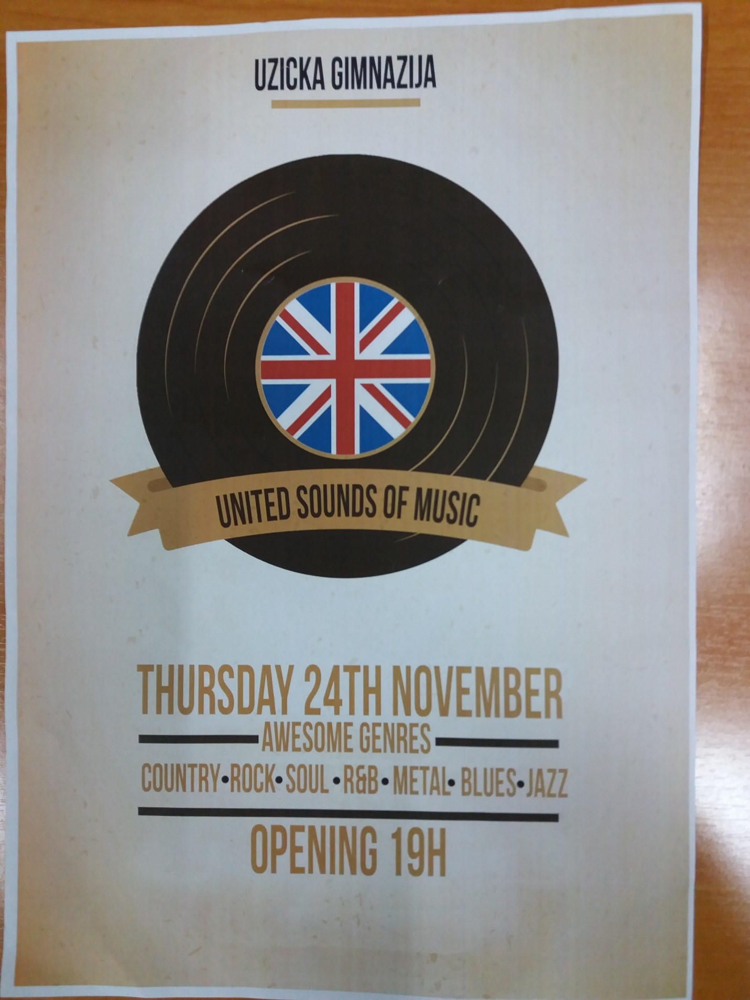
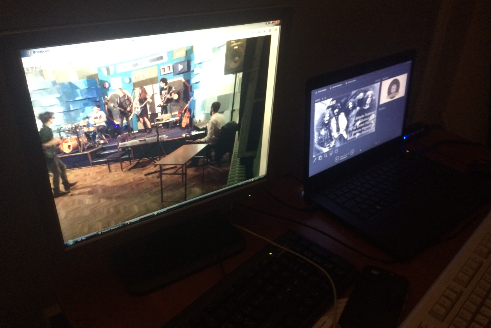

Copyright©
Tomislav Bakic 2016.
Die dreizehnte Englisch in Uzice Gymnasium am 24. November 2016 auf jeden Fall die Grenzen aller bisherigen Shows verschoben, zumindest in der Anzahl der teilnehmenden Schüler. Etwa 60 von ihnen arbeiteten hart für ungefähr zwei Monate als Sänger, Spieler, Designer von Bühne, Poster, Einladungen… Genre clips Hersteller, technische Unterstützung, Chorsänger, Koordinierung alles selbst mit minimaler Überwachung ihrer Lehrer. Die Organisation wurde auf einem hohen Niveau, mit einigen professionellen Schliff und große technologische Hilfe. Nicht jeder, der wollte diese Show zu sehen war in der Lage, diese kleinen Schauplatz für den Fall einer solchen Ausmaßes zu geben!
Dieses Projekt war eine bemerkenswerte Gelegenheit, Kreativität zum Ausdruck zu bringen und die Grenzen. Wir haben etwas, das diese Schule noch nie zuvor gesehen hat. Die Gestaltung der Bühne einfach war im Vergleich zu den Prozess. Trotz, dass wir eine unglaublich tolle Zeit hatte. Als Teil dieses Projekts hat mich sehr stolz. Ich bin froh, in der Lage zu sein, etwas Ähnliches haben zurück zu, als ich an der High School fertig zu schauen. Was für eine Erfahrung!
Seit Anfang wollten wir eine "ernsthafte" zeigen, dass erinnert wird. Wir geplant es sorgfältig und Wir kleben geblieben. Als wir anfingen, gab es nicht viele Leute, aber wie die Zeit verging. Im November haben wir begonnen, die szenografie und wir hatten bereits einen Plan, die Jelena und ich bereits gemacht. Die Schule hat uns sehr geholfen und gab uns die Materialien. Wir haben jeden Tag in der Schule die Einrichtung für Sie. Die Show war super. Die Bühne war super, Leute erfüllte den Raum, und Musiker waren fantastisch. Die Gewinner wurden aus Metall Köpfe mit Song "Iron Man". Besonderen Dank an unseren technischen Support, Prosa, Kojo und Ziljo. Ich möchte vielen Dank an alle, insbesondere die Mitglieder der Jury und alle Konkurrenten für gute Nacht zu sagen.
Nach 15 Minuten der Abstimmung und Show teil der Programm Jury entschieden! Die Gewinner wurden die United Sounds von Musik waren "kurze Zeit" mit dem Song Ironman!

Die Atmosphäre war Elektrische und die Luft war dick mit Liebe und Begeisterung. Gesamte Veranstaltung war sehr gut organisiert. Es waren 12 Gruppen aus 12 verschiedenen Genres der Musik. Zwischen ihren Auftritten waren wir in der Lage, kurze Clips über die folgenden Genre zu beobachten, und es bildete die Zeit zwischen dem Aufpassen Künstler noch mehr Spaß. Ist der Gast wirklich bereit war, die Stimmung war super! Drei Mitglieder der Jury verkündet die Sieger. Das beste an dem Abend war, als alle Gruppen auf die Bühne kam und begann zu feiern. Jeder war so glücklich, und es war egal, wer der Gewinner war, denn alle hatten eine tolle Zeit! Sie hatten so viel Spaß, so dass wir, das Publikum, wollte sie auf der Tanzfläche zu verbinden. Noch einmal, die Nacht war ein voller Erfolg und wir freuen uns auf die nächste!

Wenn es um die technische Seite von diesem Ereignis, es war kein Spaziergang im Park. Dieses Mal ist es anders war als jeder Andere auch so weit. Es war der erste Fall, in dem das technische Team hinter der Szene, die zusätzliche Probleme für uns geschaffen, sondern war eine große Verbesserung zum gesamten Erscheinungsbild gesetzt wurde. Eine meiner Aufgaben war die Erstellung einer kurzen Video für jeden der zwölf Genres und zeigt sie vor Aufführungen. Zunächst schien es ziemlich einfach, aber es stellt sich heraus, dass es nicht so einfach, ein ganzes Genre mit drei Songs vertreten. Ein weiteres Problem war der Aufenthalt bei allen Musikern auch während der unerwarteten Ereignisse wie der improvisierten Song Teile und verlängerte Performances synchronisiert. Zum Glück waren wir in der Lage, alles, was die Arbeit machen, und am Ende, ich kann sicher sagen, dass mit diesem Wettbewerb, wir nahmen die Dinge auf eine neue Stufe!
In der Nacht gab es eine PP-Präsentation. Ich und mein Kumpel Alexa waren verantwortlich für das. Wir haben die Präsentation, die verschiedenen Videos und Bilder, die dem, was auf der Bühne geschieht, war relevant waren. Es brauchte viel Zeit, es richtig zu machen, und eine Menge Übung um die Zeiteinstellung der Folien. Am Ende die Praxis und die Arbeit hat sich gelohnt und es war wirklich ein einmaliges Erlebnis für die ganze Crew und ich bin mir sicher, dass das Publikum spürte die Gleiche.
Ich war einer der Teilnehmer an dieser Show. Ich und meine Freunde waren ein Lied singen von Tobey Maguire "Wild". Ich bin sehr zufrieden, da der wichtigste Teil der Vorbereitungen für die Show wurde der Prozess selbst, die sehr produktiv war, und wir halfen sich gegenseitig in allen Abschnitten, wurden wir näher und ich habe viele neue Freunde. Ich freue mich auf neue Projekte wie dieses Teilnehmenden!

Ich hatte eine Menge Spaß hosting United Sounds für Musik und ich habe auch viel aus dieser Erfahrung. Ich habe alles von unseren Proben in die eigentliche Show. Es war unglaublich.
Ich war sehr aufgeregt in der Show teilzunehmen. Da ich ein Neuling war dies eine große Chance, meine Band "kratki Sa vremenom" ("Die Zeit") auf die ganze Schule. Sobald wir auf der Bühne betraten, fühlten wir, wie wir für Sie geboren wurden. Jeder schrie, jeder liebte uns. Ich freue mich auf weitere Shows dieser Art, wer weiß, wo wir enden kann.